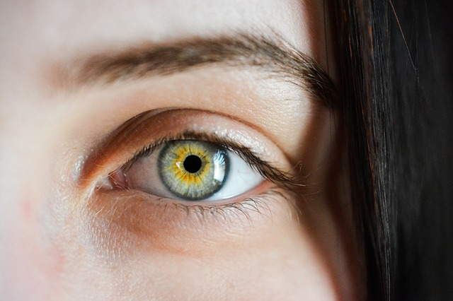

Eyes are organs that help us to see. They help us to see words in a book so we can read. They allow us to see the various colors that surround us daily. Some people believe that they are openings into the soul.
These are the parts of the eye that work together to help you see:
In order for your eyes to function, they must let in light through pupil and into the back of the eye. The lens then helps to focus the light, sort of like a camera. This light then focuses on a single point on the retina which then sends millions of signals to the brain which interprets the image. Of course there are a million other functions that take place, but this is the simplest way to explain it.
The great thing about eyes is that they come in all different shapes and colors. The most common eye shapes are typically:
Eye colors can also vary greatly. Typically eyes are brown, green, blue, but there are a million shades that can occur in between. There are even people who have two different color eyes!
